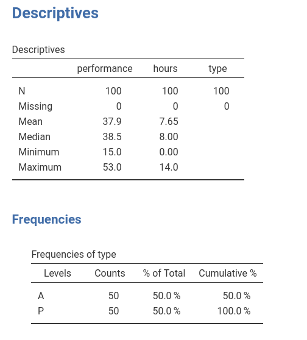
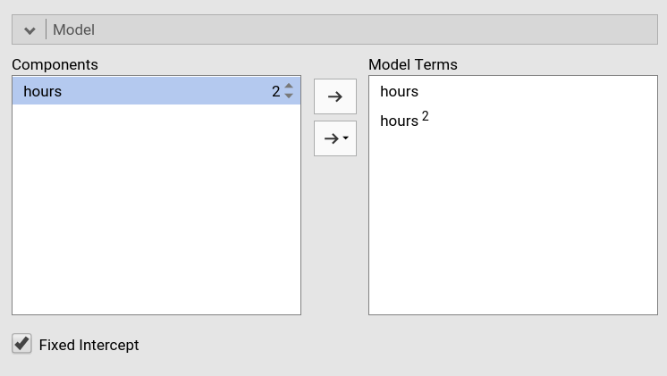

Polynomial Effects
1.5.0
In this example we work out an example of polynomial regression in the GLM, using jamovi GAMLj. Data are (simulated data) here.
The research design
The dataset has three variables of interest. Imagine we measured
athletes performace in a match using a standard scale and the number of
hours they trained in a week. The idea is to study the relationship
between hours of training and performance. Because training can be good
for performance but training too much may have detrimental effects on
performance, we foresee a non-linear effect of training hours on
performance. Furthermore, athletes are divided in two groups (variable
types), professionals (P) and amateurs
(A), and we want to check if the effects of training is
different in the two groups.

Non-linear (polynomial) effects
Input
We first set up a linear regression with only linear effects. We
launch General Linear Model from the
Linear Models menu. We put performance in the
dependent variable field and hours in the
covariate.
By defining the variables we obtain a simple regression in the
output, but we want to specify a quadratic effect of hours,
so we go to the Model panel. As soon as we select
hours in the Components field, we can see on
the right of the variable a little 1 appearing.

That little number indicates the order of the effect that we want to
insert in the model, that is, the exponent of the term we want to
include. The number 1 (default) means linear
effects. To include a quadratic effect (second order), we should
increase the number to 2, as in the Figure. We can then
push the arrow to move the quadratic term into the model.

If we want, for instance, also the cubic term, we should increase the
number to 3 and move it to the model as well.
Results
Results show that the polinomial (linear+quaratic+cubic) effects of
hours on performance explain about 50% of the
variance \(R^2=.486\).

BY inspecting the F-tests and the estimates (B coefficients) we can
see that we have a linear (\(hours\)) and a quadratic (\(hours^2\)) effect of hours to
performance, whereas the cubic effect (\(hours^3\)) is trivial and can be
disregarded (the \(\eta^2p\) is
practically zero).
When it comes to polynomial models, the best way to figure out the
relationship between variables is to plot the effects. We can do that by
selecting the Plot panel and by putting hours
in the Horizontal Axis field (mind that in GAMLj default
the IV is centered to its mean, to obtain a nice plot I changed the IV
scaling to none in Covariates scaling
panel).


We can see that, on average, up to 10 hours, one more hour of training is good for the performance, but after 10 hours, increasing training is not advantageous in terms of performance. That is, we have a curvilinear effect of the IV on the DV.
Conditional polynomial effects
We can now analyze possible differences due the the type of athletes
by introducing type as a factor in the model.

When we go to the Model panel, we see that the main
effect of type is automatically inserted in the model
terms.

However, we want to see if the effect of hours depends
on type so we need to include the interactions. We need two
interactions: the interaction linear hours by type,
and quadratic hours by type (I removed cubic
hours based on the previous analysis).
For the linear by type interaction, we select both
type and hours and we press the
arrow to move the interaction term to the
Model Terms field.

For the quadratic by type interaction, we select
both type and hours, and we increase the
exponent of hours to signal that we want the quadratic term
to interact with type. We press the arrow to
move the interaction term to the Model Terms field.

We have done setting the new model.
Results
The model info table shows the actual R-syntax model we estimated and the \(R^2\), the latter clearly larger than the \(R^2\) of the previous model.
As regards the effects, we can see that we do have a quadratic
hours by type interaction, so we can say that the effect
of hours on performance has a different shape
depending on the type of athlete.

Inspecting the plot makes the interpretation easier.

For professional athletes (P), the performace increases
along hours of training almost linearly, thus the more hours they train,
the better the performance. For amateur athletes (A) the
performance is positively linked to training hours up to 9 hours, after
which more training means a strong decrease in performance. Thus, for
amateurs there’s a U-shaped effect of training on performance, whereas
for pro’s the relationship is practically linear.
Simple effect analysis (Advanced)
Input
Assume we want to test groups differences along the training hours
continuum. That is, we want to test the difference between the two
groups at different levels of training length. To do that, it is
convinient to rescale the variables: We standardize the independent
variable and code the factor with simple coding, which
yields coefficients associated with the factor equal to the groups
difference in the expected value of the dependent variable.

We then ask for the simple effects of type for different
levels (mean and mean plus/minus one SD) of hours.
Results
The simple effects tables show that for low (-1SD) and high (+1SD)
training the groups are statistically different and the difference is to
the advantage of the Professional group (\(P-A=2.977\) and \(P-A=2.667\)), whereas for average training
the performance does not seem to be different between the two groups
(\(P-A=-0.0403\)). By changing the
covariate conditioning in the Covariate Scaling panel one
can test these differences for all values of hours that one
wishes.
To visualize what we are doing, let’s see the plot after standardizing the IV.

In practice, the simple effects tests we have seen tested the
difference between the blue and the yellow curve at hours
equal to -1, 0, and 1 . Because we standardized hours,
those values correspond to -1SD, mean, and +1SD of training hours.
Examples
Some worked out practical examples can be found here
Comments?
Got comments, issues or spotted a bug? Please open an issue on GAMLj at github or send me an email